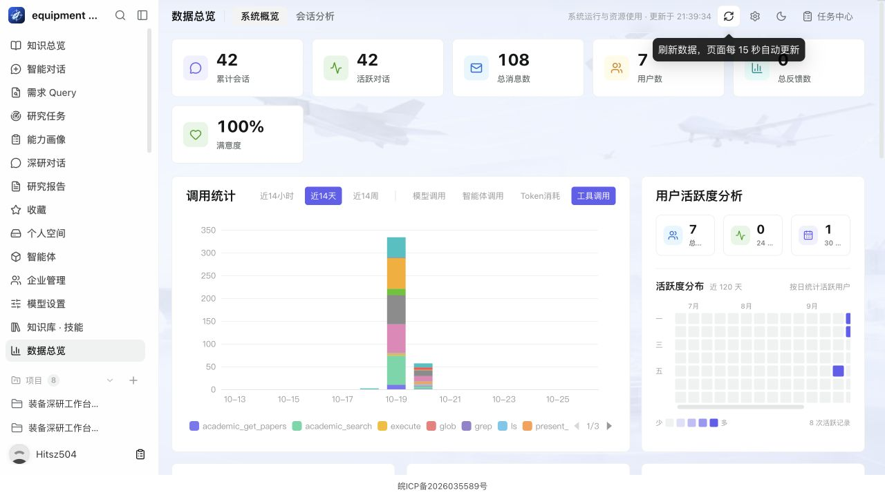

Deepquest · 2026-10-26 · 云端已部署数据总览提速与自动刷新
统计卡片独立加载，慢统计不再阻塞基础指标。模型账本由数据库聚合，再按业务入口与模型返回少量汇总；原有历史用量与逐次账本避免重复计数。真实 PostgreSQL 核对确认计数、Token 与分布一致。
| 16 路统计访问 | 96 次全部成功；P95 2.71 s → 0.75 s |
| 整组请求完成 | 4.64 s → 1.63 s |
| 模型用量单次读取 | 634 ms → 88 ms |
| 工具统计 SQL | 11 次 → 2 次；滚动七日边界与权限过滤回归通过 |
| 自动更新 | 写入后合并通知；可见页面每 15 秒校验；切回页面刷新 |
| 真实数据变化 | 新增知识库后自动 3→4，删除后自动 4→3；测试夹具已清理 |
| Docker 并发 | 通用任务 4→8；ARQ 最大并发 16；API 进程 2 |
| 内存快照 | 已用 49.7%，可用约 3.74 GiB |
| 验证 | 602 项前端、21 项后端测试通过，构建与 lint 通过 |
刷新行为
数据总览、知识总览、资料库列表和个人空间目录在可见时定期校验；用户写入、任务进入终态、切回标签页和恢复缓存页面会触发合并刷新。隐藏及未活动页面暂停该调度，慢请求不重叠。个人空间只更新目录，保留预览中的编辑。总览新增手动刷新入口与最近更新时间。
本次发布保留了前一版本的指纹静态资源，已验证旧脚本 URL 返回 200，减少已打开页面切换功能时的资源失效。17 个修改文件与云端源码核对一致，运行中 API 源码也已校验。
范围与复现
- 并发测量从云机通过生产 HTTPS 入口，以管理员会话运行 16 路访问，每路顺序请求 6 个统计接口，共 96 次；指标是统计 API 耗时，并非浏览器整页 LCP。
- 新增与删除临时知识库后，页面未手动刷新即显示 3→4→3；夹具已删除。自动刷新不是服务器推送，其他客户端写入由下一轮可见页面轮询获取。
- 新增写操作通知只广播资源类型与更新时间，不广播记录正文或凭据。动态 API 使用 no-store，没有增加长期业务数据缓存。
- 两次测量使用相同接口与并发规模；实际网络与长期大任务吞吐仍随业务负载变化。
本地项目保持关闭；本机微信连接程序保留运行。云端 readiness 正常，API 和主 Worker 没有 OOM 或自动重启。

完整验收 JSON · 基线 · 最终并发测量 · 真实数据变化 · 源码摘要